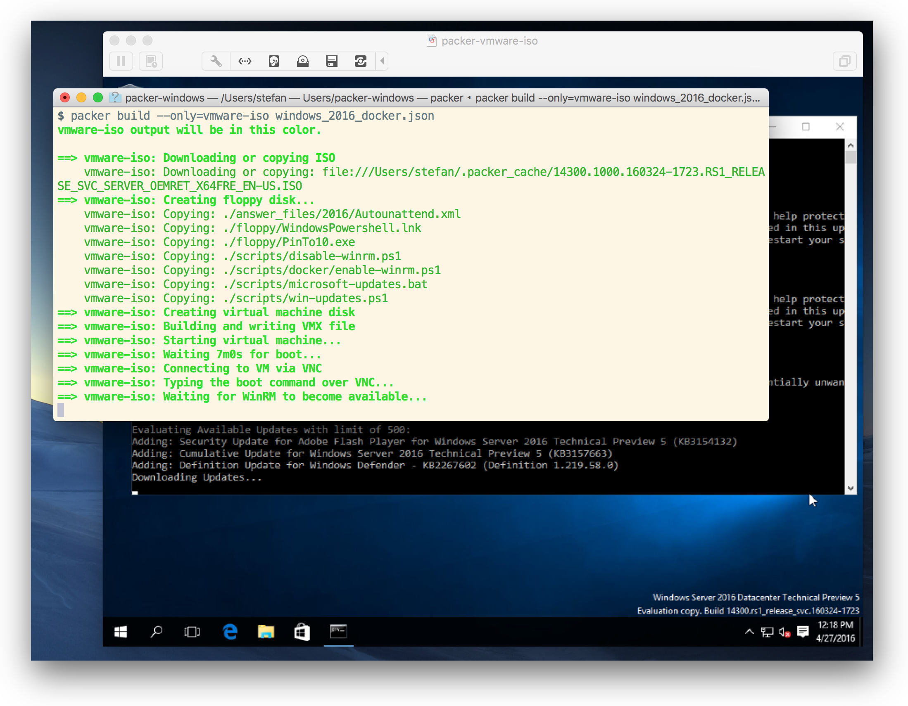
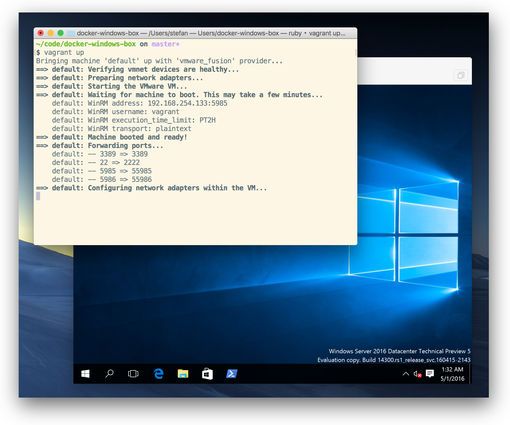
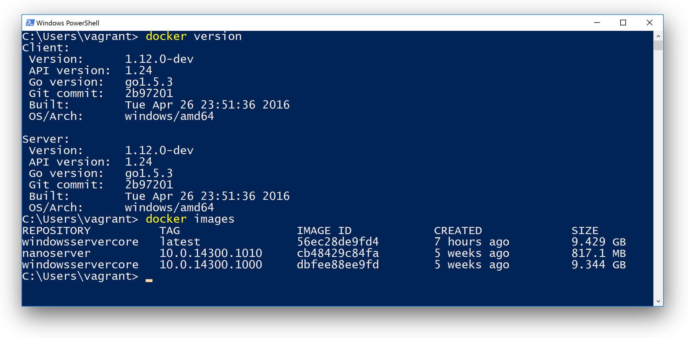

It is great to see that more and more people are starting to test Windows Docker containers. The latest Windows Server 2016 Technical Preview 5 is a good starting point to see the current state of the Docker Engine running on Windows and get in touch with Windows Containers.
Very soon there will be a Microsoft Azure template to get started very easily. Another simple way will be creating a Docker Machine in Azure, once a pull request is merged.
Tutorials
But for now it takes some effort and time to set up such a local VM. There are good tutorials that guide you through all the steps needed.
- Setup Docker on Windows Server 2016 in VirtualBox by Arun Gupta
- Windows Docker Containers in Hyper-V by Gabriel Schenker
Packer + Vagrant = Automation
If you don't want to do all these whole setup manually and wait in front of your computer to enter the next step you can use Packer and Vagrant.
Packer takes the ISO file and bakes a base box VM to be used with Vagrant. With Vagrant you can spin up one ore more such VM's and even form a Windows Docker Swarm.
The Packer template to create a Windows 2016 TP5 VM including the Docker Engine is tested with VirtualBox 5.0.20 and VMware Fusion 8.1 and should also work with VMware Workstation if you are working with a Windows PC.
Run Packer
To build the Vagrant base box with Packer 0.10.0 you just clone the GitHub repo.
git clone https://github.com/StefanScherer/packer-windows
cd packer-windows
Now build the Vagrant base box for VMware
packer build --only=vmware-iso windows_2016_docker.json
or for VirtualBox.
packer build --only=virtualbox-iso windows_2016_docker.json
This takes about an hour, so you can leave your computer for a while.

After that a box file should be created in the current directory. Now add this box to Vagrant with
vagrant box add windows_2016_tp5_docker windows_2016_docker_vmware.box
If you have both hypervisors, you also can create both base boxes and add them. You can list all your base boxes with
$ vagrant box list
windows_2016_tp5_docker (virtualbox, 0)
windows_2016_tp5_docker (vmware_desktop, 0)
Run Vagrant
Now you can create test and dev scenarios with this new base box. There is another GitHub repo for that. We just clone it with
git clone https://github.com/StefanScherer/docker-windows-box
cd docker-windows-box
With the current Vagrant 1.8.1 it is easy to spin up a VM to have Docker running on Windows 2016 TP5.
vagrant up
Vagrant powers up a VM and install further Docker tools like Machine and Compose. Also Git will be installed to get in touch with some Windows Dockerfiles available on GitHub.

You can open a PowerShell window and run for example
docker version
docker images

Congratulations! You can start working with a brand new Docker Engine running on Windows 2016 TP5.
Have fun!
What Packer does for you
If you want to understand what Packer does building such a VM in an automated way here is a list of provision scripts that Packer runs.
Install features
In the script enable-winrm.ps1, just before the WinRM port will be opened to let Packer login and do further provisioning some Windows features like Containers and Hyper-V (only VMware) will be enabled.
Install Docker
The next script install-docker.ps1 installs the Docker service and client and the windowsservercore base Docker image. If Hyper-V is enabled, also the nanoserver base Docker images will be installed.
Patch windowsservercore image
As the TP5 and relating files and images are very fresh and it is still a technical preview, there might be some obstacles here and there.
At the moment we need this script to speed up the windowsservercore Docker image a little bit. The script patch-boot-time-for-containers.ps1 just fixes that for you.
Enable insecure Docker port 2375
For a local test environment we also just open the insecure Docker port 2375 with the script enable-docker-insecure.ps1.
You can remote control your Windows Docker engine from your host machine that is running the VM. Try it out, especially if you are normally working with Linux or Mac.
Once there is a Docker Machine driver for local Windows VM's is available I would prefer that and have the secure TLS connection.
Add docker group
The new Windows Docker engine listens to a Windows named pipe. This is very similar to the Unix socket on Linux.
A normal user does not have access to it, so you have to open an administrator shell to work with the Docker engine.
The script add-docker-group.ps1
adds the option -G docker to the Docker engine to give all members of the Windows group docker access to that named pipe.
The script also adds the user vagrant to that group. So in the final Vagrant box you just open a normal PowerShell window and can use the Docker engine.
Remove key.json
The final script remove-docker-key-json.ps1
removes the key.json file from the initial installation. This file will be created on the first start of the Docker engine in each Vagrant VM and creates different ID's for each Docker engine.
This is important if you want to build a Windows Docker Swarm. Each Docker engine needs a different ID.
Conclusion
As there might be updates in the Docker base images and the Docker engine itself it is now very easy to reproduce the base VM with Packer and Vagrant without all the manual steps again.
If you find this blog post useful, just share it with your friends and colleages. Please leave a comment if you have questions or improvements. You can follow me on Twitter @stefscherer.